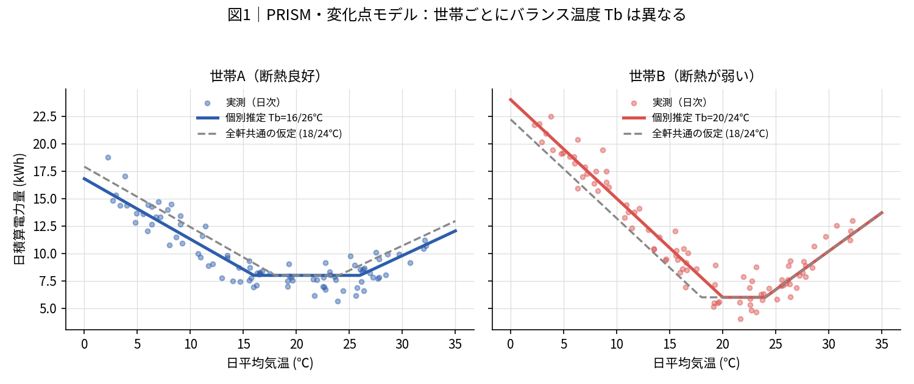
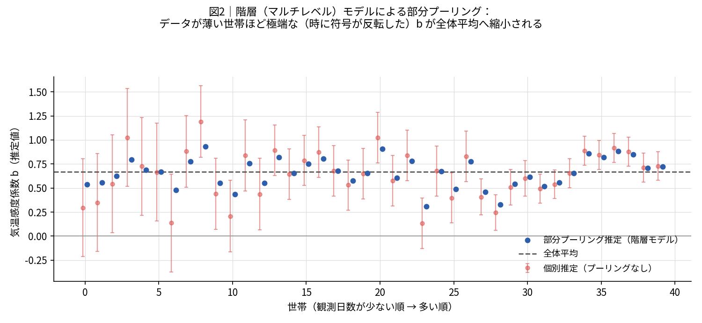
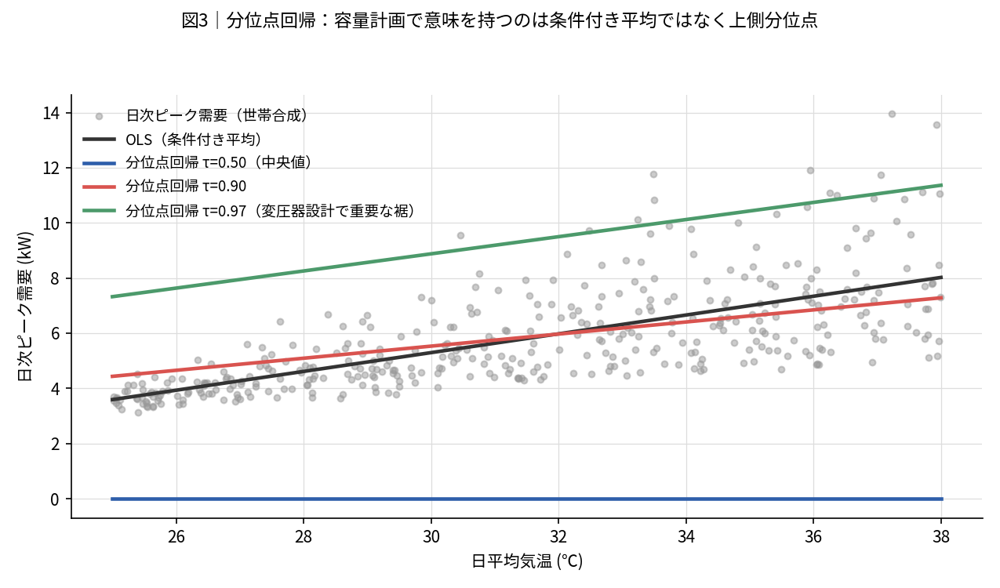
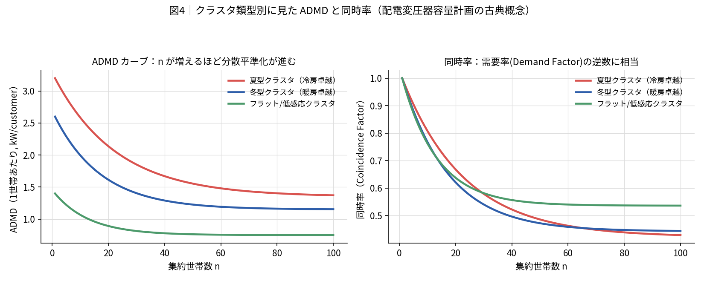
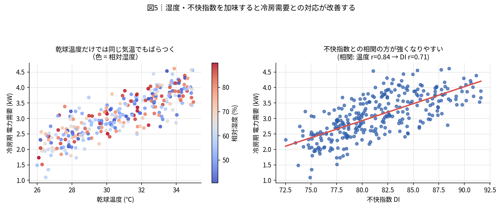
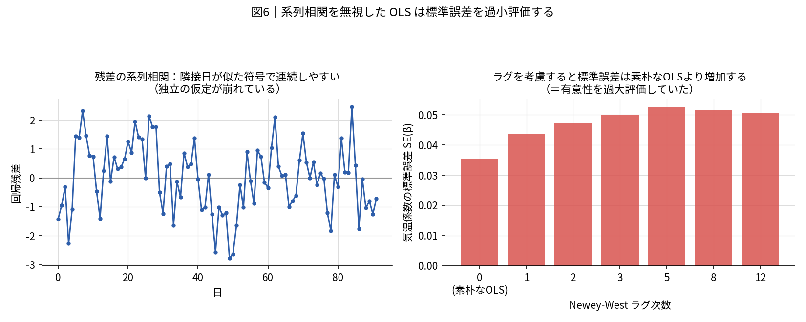

PRISM・階層モデル・分位点回帰・ADMD・湿度補正・Newey-West — 6つの論点を、現行パイプラインとの接続点付きで整理する
PRISM は1980年代にプリンストン大学で開発された、住宅の暖冷房エネルギー消費を気象データから 説明するための古典的手法である。核となる発想は単純で、「電力需要と気温の関係は、ある温度 （バランス温度・変化点温度 Tb）を境に折れ線（ピースワイズ線形）になる」というものである。 Tbより低い日は暖房が立ち上がり気温が下がるほど消費が増え、Tbより高い日は冷房が立ち上がり 気温が上がるほど消費が増える。その間（不感帯）は基礎負荷（ベースロード）だけが乗る。
度日法（degree-day method）で18℃/24℃のような固定の基準温度を全世帯に当てはめるのは、 「断熱性能・設備効率・在宅行動パターンが世帯ごとに異なる」という現実を切り捨てていることに 等しい。断熱の良い住宅は外気温がかなり下がるまで暖房を入れず、逆に断熱が弱い住宅や在宅時間が 長い世帯はより高い外気温でも暖房が立ち上がる。PRISM・ASHRAE Guideline 14 の 5-parameter change-point model は、この Tb 自体を世帯ごとの回帰パラメータとして推定する ことで、この異質性を明示的にモデルに取り込む。
TbH = TbC の単純な変化点モデル（3パラメータ）もあるが、暖房と冷房で建物の熱的挙動や 設定温度の心理的な非対称性が異なるため、実務では暖冷別のTbを推定する5パラメータ型が標準形 として扱われることが多い（ASHRAE Guideline 14 のキャリブレーション文脈でも同様の定式化が 使われる）。

PRISM energy scorekeeping Fels
change-point model degree days
ASHRAE Guideline 14 change point regression
5パラメータ 変化点モデル 度日法
92日分（あるいはそれ以下）の日次データだけから世帯ごとの気温感度 b を独立に推定すると、 サンプルが少ない世帯ほど推定値のばらつきが大きくなる。極端な場合、たまたま観測期間中の ノイズの当たり方で「気温が上がると消費が減る」ような、物理的にありえない負の b が 出てしまう。これは世帯の実際の挙動ではなく、単に統計的推定の不確実性が大きいことの表れである 可能性が高い。
階層モデル（マルチレベルモデル）では、世帯ごとの係数 b_i を「独立したパラメータ」では なく「全体平均のまわりに分布するランダム効果」として扱う。
この縮小の度合いは、その世帯のデータの不確実性（サンプル数・残差分散）と、 世帯間分散 τ² の比で自動的に決まる。データが十分にある世帯はほぼ縮小されず、 データが薄い世帯ほど強く縮小される。結果として、無情報に近い負の b のような 推定はほぼ消え、極端な外れ値による「意味のないクラスタ」の発生も抑えられる。

lme4（R）や statsmodels MixedLM
/ PyMC（Python）などでランダム傾き付き混合モデルに置き換えるだけで、
図Aで見えていた「無意味な負のb」の大半は解消される可能性が高い。クラスタリング前の
特徴量エンジニアリングの段階として位置づけると、既存の5〜6手法比較の枠組みとも自然に接続する。
hierarchical model household electricity temperature response
partial pooling random slope mixed model
OLS（最小二乗法）が推定するのは「気温が与えられたときの需要の条件付き平均」である。 しかし変圧器容量計画で意味を持つのは平均的な日ではなく、「最も厳しい日にどれだけの需要が 発生するか」という上側の極値である。日次ピークは本質的に極値統計の対象であり、 条件付き平均をモデル化するOLSは目的と噛み合っていない。
OLSでは気温と需要の関係を1本の直線（平均の傾き）でしか表せないが、分位点回帰では τ=0.5（中央値）、τ=0.9、τ=0.97 のように複数の分位点それぞれに対して別々の傾き・切片を 推定できる。多くの電力需要データでは、気温が上がるほど「分散も裾の重さも」増える （不均一分散・条件付き非対称性）ため、上側分位点の傾きは平均の傾きよりも急になることが多い。

statsmodels.regression.quantile_regression
や lightgbm の分位点損失（objective='quantile'）に置き換え、
容量計画で実際に使いたい分位点（例：年間上位1〜3%に相当するτ）を直接予測対象にすると、
「クラスタ別の平均的な負荷特性」に加えて「クラスタ別の裾の厳しさ」を定量化でき、
ADMD分析（次項）とも相性が良い。
quantile regression peak electricity demand temperature
ADMDは配電用変圧器の容量計画における古典概念で、「n世帯を集約したときの合成ピーク需要を 世帯数で割った値」が、集約する世帯数nが増えるほどどのように収束していくかを表す。 各世帯のピークは同時刻に発生するとは限らない（＝多様性・diversity）ため、 単純に「1世帯の最大需要 × n」で変圧器を設計すると過大設計になる。ADMDはこの 「集約によるならし効果」を定量化したものである。
ADMDカーブは一般に、世帯数が少ないうちは急激に低下し、ある程度の世帯数（数十〜百程度）を 超えるとほぼ横ばいになる形を取る。この漸近値・収束の速さは需要特性（ピークの立ち方、 同時性の強さ）に依存するため、クラスタ類型ごとにADMDカーブが異なるはずである。

after diversity maximum demand residential smart meter
需要率 不等率 変圧器 容量計画
coincidence factor low voltage transformer
夏季の空調負荷は、乾球温度（気温そのもの）だけでなく湿度の影響を強く受ける。 同じ気温でも湿度が高いほど体感の不快感が増して空調の稼働率・設定強度が上がり、 また除湿にもエネルギーを要するため、実際の電力需要は乾球温度単独よりも 「不快指数」や「エンタルピー」との相関が強くなることが知られている。
Open-Meteo は気温に加えて相対湿度・日照時間なども返すため、追加の取得コストはほぼゼロで 不快指数やエンタルピー簡易推定を特徴量に加えられる。既存のAMeDAS特徴量（湿度・日照時間・ 不快指数）の統合方針とも整合する。

cooling degree days humidity enthalpy latent load
不快指数 電力需要
日次データを対象にOLSを行う際、古典的な標準誤差の公式は「誤差項が互いに独立」という 前提に立っている。しかし気温や電力需要の日次データでは、ある日の残差が翌日以降の残差と 相関を持つ（系列相関・自己相関）ことが一般的である。暑い日が続く、寒波が居座る、 といった気象の持続性がそのまま需要の残差に反映されるためである。
系列相関がある状態で古典的なOLS標準誤差をそのまま使うと、実際の不確実性よりも 小さい標準誤差を報告してしまう（多くの場合、正の自己相関では過小評価になる）ことが多い。 その結果、本来は有意でない係数を「統計的に有意」と誤って判断してしまうリスクがある。

statsmodels の cov_type='HAC' オプションで比較的簡単に切り替えられる。
Newey-West standard errors time series regression